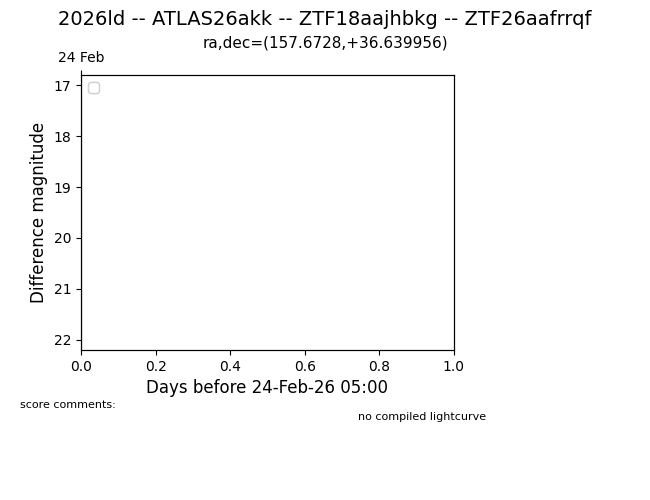
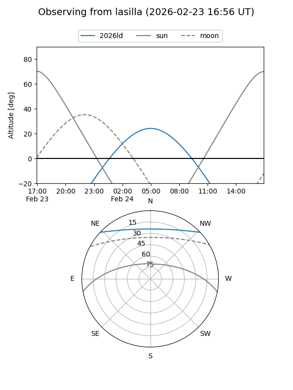
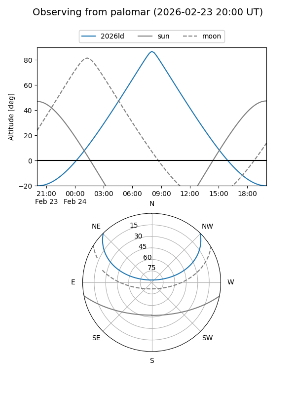

2026ld
Target 2026ld at 2026-02-24 09:08
Aliases and brokers:
FINK: link
Lasair: link
ALeRCE: link
TNS: link
YSE: link
alt names
ZTF26aafrrqf (ztf)
ZTF18aajhbkg (fink_ztf)
2026ld (tns,yse)
ATLAS26akk (atlas)
Coordinates:
equatorial (ra, dec) = 157.6728,+36.63996
equatorial (HMS+DMS) = 10:30:41.47,+36:38:23.84
galactic (l, b) = (186.2763,+58.84442)
Flags:
Photometry:
no photometry available
Lightcurve

Visibility


Additional plots